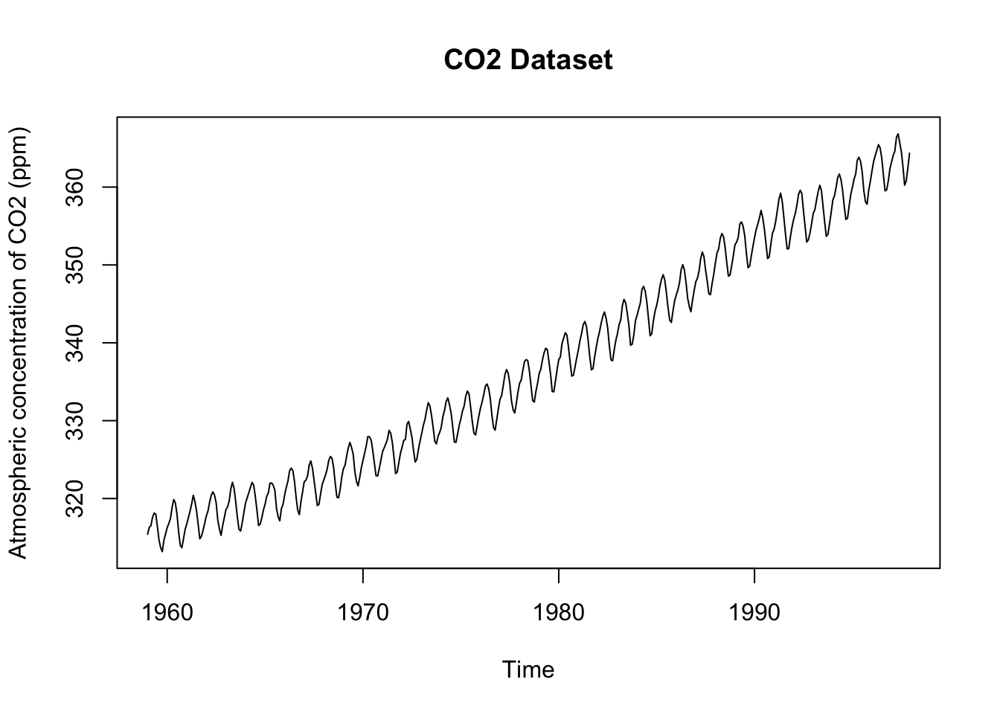

1 Basic R Scripts
In this example, we'll begin with data science question and answer it in R. We'll go through these scripts line by line to show how we can use R. To follow along, copy each of these lines and paste them in your R Script (top left quadrant). Once it's pasted there, we can run each line and view the output in the R Console (bottom left quadrant).
1.1 Global Carbon-Dioxide Concentrations
CO2 is a greenhouse gas responsible for trapping heat. Human's have released more CO2 into the atmosphere through industrialism. How have global carbon-dioxide (CO2) concentrations changed over time?
First, we load the dataset. In our case, the dataset we'll be using is pre-built into R as co2, meaning we don't need to download this dataset, we just need to call it. The co2 dataset contains atmospheric concentrations of CO2 are expressed in parts per million (ppm). This data is a time-series of monthly CO2 concentrations recorded between 1959 and 1997. First, let's make sure the pre-built data is installed correcly.
co2## Jan Feb Mar Apr May Jun Jul Aug Sep Oct
## 1959 315.42 316.31 316.50 317.56 318.13 318.00 316.39 314.65 313.68 313.18
## 1960 316.27 316.81 317.42 318.87 319.87 319.43 318.01 315.74 314.00 313.68
## 1961 316.73 317.54 318.38 319.31 320.42 319.61 318.42 316.63 314.83 315.16
## 1962 317.78 318.40 319.53 320.42 320.85 320.45 319.45 317.25 316.11 315.27
## 1963 318.58 318.92 319.70 321.22 322.08 321.31 319.58 317.61 316.05 315.83
## 1964 319.41 320.07 320.74 321.40 322.06 321.73 320.27 318.54 316.54 316.71
## 1965 319.27 320.28 320.73 321.97 322.00 321.71 321.05 318.71 317.66 317.14
## 1966 320.46 321.43 322.23 323.54 323.91 323.59 322.24 320.20 318.48 317.94
## 1967 322.17 322.34 322.88 324.25 324.83 323.93 322.38 320.76 319.10 319.24
## 1968 322.40 322.99 323.73 324.86 325.40 325.20 323.98 321.95 320.18 320.09
## 1969 323.83 324.26 325.47 326.50 327.21 326.54 325.72 323.50 322.22 321.62
## 1970 324.89 325.82 326.77 327.97 327.91 327.50 326.18 324.53 322.93 322.90
## 1971 326.01 326.51 327.01 327.62 328.76 328.40 327.20 325.27 323.20 323.40
## 1972 326.60 327.47 327.58 329.56 329.90 328.92 327.88 326.16 324.68 325.04
## 1973 328.37 329.40 330.14 331.33 332.31 331.90 330.70 329.15 327.35 327.02
## 1974 329.18 330.55 331.32 332.48 332.92 332.08 331.01 329.23 327.27 327.21
## 1975 330.23 331.25 331.87 333.14 333.80 333.43 331.73 329.90 328.40 328.17
## 1976 331.58 332.39 333.33 334.41 334.71 334.17 332.89 330.77 329.14 328.78
## 1977 332.75 333.24 334.53 335.90 336.57 336.10 334.76 332.59 331.42 330.98
## 1978 334.80 335.22 336.47 337.59 337.84 337.72 336.37 334.51 332.60 332.38
## 1979 336.05 336.59 337.79 338.71 339.30 339.12 337.56 335.92 333.75 333.70
## 1980 337.84 338.19 339.91 340.60 341.29 341.00 339.39 337.43 335.72 335.84
## 1981 339.06 340.30 341.21 342.33 342.74 342.08 340.32 338.26 336.52 336.68
## 1982 340.57 341.44 342.53 343.39 343.96 343.18 341.88 339.65 337.81 337.69
## 1983 341.20 342.35 342.93 344.77 345.58 345.14 343.81 342.21 339.69 339.82
## 1984 343.52 344.33 345.11 346.88 347.25 346.62 345.22 343.11 340.90 341.18
## 1985 344.79 345.82 347.25 348.17 348.74 348.07 346.38 344.51 342.92 342.62
## 1986 346.11 346.78 347.68 349.37 350.03 349.37 347.76 345.73 344.68 343.99
## 1987 347.84 348.29 349.23 350.80 351.66 351.07 349.33 347.92 346.27 346.18
## 1988 350.25 351.54 352.05 353.41 354.04 353.62 352.22 350.27 348.55 348.72
## 1989 352.60 352.92 353.53 355.26 355.52 354.97 353.75 351.52 349.64 349.83
## 1990 353.50 354.55 355.23 356.04 357.00 356.07 354.67 352.76 350.82 351.04
## 1991 354.59 355.63 357.03 358.48 359.22 358.12 356.06 353.92 352.05 352.11
## 1992 355.88 356.63 357.72 359.07 359.58 359.17 356.94 354.92 352.94 353.23
## 1993 356.63 357.10 358.32 359.41 360.23 359.55 357.53 355.48 353.67 353.95
## 1994 358.34 358.89 359.95 361.25 361.67 360.94 359.55 357.49 355.84 356.00
## 1995 359.98 361.03 361.66 363.48 363.82 363.30 361.94 359.50 358.11 357.80
## 1996 362.09 363.29 364.06 364.76 365.45 365.01 363.70 361.54 359.51 359.65
## 1997 363.23 364.06 364.61 366.40 366.84 365.68 364.52 362.57 360.24 360.83
## Nov Dec
## 1959 314.66 315.43
## 1960 314.84 316.03
## 1961 315.94 316.85
## 1962 316.53 317.53
## 1963 316.91 318.20
## 1964 317.53 318.55
## 1965 318.70 319.25
## 1966 319.63 320.87
## 1967 320.56 321.80
## 1968 321.16 322.74
## 1969 322.69 323.95
## 1970 323.85 324.96
## 1971 324.63 325.85
## 1972 326.34 327.39
## 1973 327.99 328.48
## 1974 328.29 329.41
## 1975 329.32 330.59
## 1976 330.14 331.52
## 1977 332.24 333.68
## 1978 333.75 334.78
## 1979 335.12 336.56
## 1980 336.93 338.04
## 1981 338.19 339.44
## 1982 339.09 340.32
## 1983 340.98 342.82
## 1984 342.80 344.04
## 1985 344.06 345.38
## 1986 345.48 346.72
## 1987 347.64 348.78
## 1988 349.91 351.18
## 1989 351.14 352.37
## 1990 352.69 354.07
## 1991 353.64 354.89
## 1992 354.09 355.33
## 1993 355.30 356.78
## 1994 357.59 359.05
## 1995 359.61 360.74
## 1996 360.80 362.38
## 1997 362.49 364.34This dataset is stored in R as co2. We can create a new variable called co2_data that replicates this co2 dataset.
co2_data <- co2
co2_data## Jan Feb Mar Apr May Jun Jul Aug Sep Oct
## 1959 315.42 316.31 316.50 317.56 318.13 318.00 316.39 314.65 313.68 313.18
## 1960 316.27 316.81 317.42 318.87 319.87 319.43 318.01 315.74 314.00 313.68
## 1961 316.73 317.54 318.38 319.31 320.42 319.61 318.42 316.63 314.83 315.16
## 1962 317.78 318.40 319.53 320.42 320.85 320.45 319.45 317.25 316.11 315.27
## 1963 318.58 318.92 319.70 321.22 322.08 321.31 319.58 317.61 316.05 315.83
## 1964 319.41 320.07 320.74 321.40 322.06 321.73 320.27 318.54 316.54 316.71
## 1965 319.27 320.28 320.73 321.97 322.00 321.71 321.05 318.71 317.66 317.14
## 1966 320.46 321.43 322.23 323.54 323.91 323.59 322.24 320.20 318.48 317.94
## 1967 322.17 322.34 322.88 324.25 324.83 323.93 322.38 320.76 319.10 319.24
## 1968 322.40 322.99 323.73 324.86 325.40 325.20 323.98 321.95 320.18 320.09
## 1969 323.83 324.26 325.47 326.50 327.21 326.54 325.72 323.50 322.22 321.62
## 1970 324.89 325.82 326.77 327.97 327.91 327.50 326.18 324.53 322.93 322.90
## 1971 326.01 326.51 327.01 327.62 328.76 328.40 327.20 325.27 323.20 323.40
## 1972 326.60 327.47 327.58 329.56 329.90 328.92 327.88 326.16 324.68 325.04
## 1973 328.37 329.40 330.14 331.33 332.31 331.90 330.70 329.15 327.35 327.02
## 1974 329.18 330.55 331.32 332.48 332.92 332.08 331.01 329.23 327.27 327.21
## 1975 330.23 331.25 331.87 333.14 333.80 333.43 331.73 329.90 328.40 328.17
## 1976 331.58 332.39 333.33 334.41 334.71 334.17 332.89 330.77 329.14 328.78
## 1977 332.75 333.24 334.53 335.90 336.57 336.10 334.76 332.59 331.42 330.98
## 1978 334.80 335.22 336.47 337.59 337.84 337.72 336.37 334.51 332.60 332.38
## 1979 336.05 336.59 337.79 338.71 339.30 339.12 337.56 335.92 333.75 333.70
## 1980 337.84 338.19 339.91 340.60 341.29 341.00 339.39 337.43 335.72 335.84
## 1981 339.06 340.30 341.21 342.33 342.74 342.08 340.32 338.26 336.52 336.68
## 1982 340.57 341.44 342.53 343.39 343.96 343.18 341.88 339.65 337.81 337.69
## 1983 341.20 342.35 342.93 344.77 345.58 345.14 343.81 342.21 339.69 339.82
## 1984 343.52 344.33 345.11 346.88 347.25 346.62 345.22 343.11 340.90 341.18
## 1985 344.79 345.82 347.25 348.17 348.74 348.07 346.38 344.51 342.92 342.62
## 1986 346.11 346.78 347.68 349.37 350.03 349.37 347.76 345.73 344.68 343.99
## 1987 347.84 348.29 349.23 350.80 351.66 351.07 349.33 347.92 346.27 346.18
## 1988 350.25 351.54 352.05 353.41 354.04 353.62 352.22 350.27 348.55 348.72
## 1989 352.60 352.92 353.53 355.26 355.52 354.97 353.75 351.52 349.64 349.83
## 1990 353.50 354.55 355.23 356.04 357.00 356.07 354.67 352.76 350.82 351.04
## 1991 354.59 355.63 357.03 358.48 359.22 358.12 356.06 353.92 352.05 352.11
## 1992 355.88 356.63 357.72 359.07 359.58 359.17 356.94 354.92 352.94 353.23
## 1993 356.63 357.10 358.32 359.41 360.23 359.55 357.53 355.48 353.67 353.95
## 1994 358.34 358.89 359.95 361.25 361.67 360.94 359.55 357.49 355.84 356.00
## 1995 359.98 361.03 361.66 363.48 363.82 363.30 361.94 359.50 358.11 357.80
## 1996 362.09 363.29 364.06 364.76 365.45 365.01 363.70 361.54 359.51 359.65
## 1997 363.23 364.06 364.61 366.40 366.84 365.68 364.52 362.57 360.24 360.83
## Nov Dec
## 1959 314.66 315.43
## 1960 314.84 316.03
## 1961 315.94 316.85
## 1962 316.53 317.53
## 1963 316.91 318.20
## 1964 317.53 318.55
## 1965 318.70 319.25
## 1966 319.63 320.87
## 1967 320.56 321.80
## 1968 321.16 322.74
## 1969 322.69 323.95
## 1970 323.85 324.96
## 1971 324.63 325.85
## 1972 326.34 327.39
## 1973 327.99 328.48
## 1974 328.29 329.41
## 1975 329.32 330.59
## 1976 330.14 331.52
## 1977 332.24 333.68
## 1978 333.75 334.78
## 1979 335.12 336.56
## 1980 336.93 338.04
## 1981 338.19 339.44
## 1982 339.09 340.32
## 1983 340.98 342.82
## 1984 342.80 344.04
## 1985 344.06 345.38
## 1986 345.48 346.72
## 1987 347.64 348.78
## 1988 349.91 351.18
## 1989 351.14 352.37
## 1990 352.69 354.07
## 1991 353.64 354.89
## 1992 354.09 355.33
## 1993 355.30 356.78
## 1994 357.59 359.05
## 1995 359.61 360.74
## 1996 360.80 362.38
## 1997 362.49 364.34We replicate this dataset and rename it as co2_data so that it's a variable that is shown in our global environment (top right quadrant).
What class is this data?
class(co2_data)## [1] "ts"A ts class is a time-series class. We can print out a summary of the co2 dataset like so.
summary(co2_data)## Min. 1st Qu. Median Mean 3rd Qu. Max.
## 313.2 323.5 335.2 337.1 350.3 366.8The summary() function is a base function R offers for quick statistics.
How long is this dataset?
length(co2_data)## [1] 468468 months worth of CO2 observations.
Can we plot this dataset?
plot(x = co2, ylab = "Atmospheric concentration of CO2 (ppm)", main = "CO2 Dataset")
Altogether, this script looks like this...
# make sure the dataset is loaded - it's a prebuilt dataset automatically loaded into R
co2
# rename the dataset as co2_data so it is visible in our global environment
co2_data <- co2
co2_data
# identify the class of the co2_data object
class(co2_data)
# print the summary of the co2_data dataset
summary(co2_data)
# find the length of the co2_data dataset using the length() function
length(co2_data)
# plot the dataset using the default plot function
plot(x = co2, ylab = "Atmospheric concentration of CO2 (ppm)", main = "CO2 Dataset")Above is our script. We run this script in the console. We can save this script and re-run this at any time. An example of this would be saving this file as co2_script.R. Once this is saved, you can close R, re-open it, and re-run your co2_script.R without re-writing any code.
1.1.1 Saving your plot
We can save any plot from the R plot window. Simply navigate to the Plots tab and select Export then Save As Image.

Figure 1.1: Save As Image
1.2 Cars - Motor Trends Magazine Data
The data was extracted from the 1974 Motor Trend US magazine, and comprises fuel consumption and 10 aspects of automobile design and performance for 32 automobiles (1973–74 models).
Load the dataset - again this is a pre-loaded dataset, but let's call on it so we can bring it into our global environment.
data('mtcars')
head(mtcars)## mpg cyl disp hp drat wt qsec vs am gear carb
## Mazda RX4 21.0 6 160 110 3.90 2.620 16.46 0 1 4 4
## Mazda RX4 Wag 21.0 6 160 110 3.90 2.875 17.02 0 1 4 4
## Datsun 710 22.8 4 108 93 3.85 2.320 18.61 1 1 4 1
## Hornet 4 Drive 21.4 6 258 110 3.08 3.215 19.44 1 0 3 1
## Hornet Sportabout 18.7 8 360 175 3.15 3.440 17.02 0 0 3 2
## Valiant 18.1 6 225 105 2.76 3.460 20.22 1 0 3 1The head() function is a quick function that prints out the first few rows of a dataset.
What's exactly is mtcars?
class(mtcars)## [1] "data.frame"It's a data.frame. Data Frames have a different storage than time series. You can also view this dataframe by clicking on the mtcars dataframe in your global environment. What are the dimensions of this dataframe? How many rows and columns does it have?
dim(mtcars)## [1] 32 11nrow(mtcars)## [1] 32ncol(mtcars)## [1] 11We have 32 rows and 11 columns within this dataframe.
What are our column names?
colnames(mtcars)## [1] "mpg" "cyl" "disp" "hp" "drat" "wt" "qsec" "vs" "am" "gear"
## [11] "carb"What are our row names (aka the make of the car)?
rownames(mtcars)## [1] "Mazda RX4" "Mazda RX4 Wag" "Datsun 710"
## [4] "Hornet 4 Drive" "Hornet Sportabout" "Valiant"
## [7] "Duster 360" "Merc 240D" "Merc 230"
## [10] "Merc 280" "Merc 280C" "Merc 450SE"
## [13] "Merc 450SL" "Merc 450SLC" "Cadillac Fleetwood"
## [16] "Lincoln Continental" "Chrysler Imperial" "Fiat 128"
## [19] "Honda Civic" "Toyota Corolla" "Toyota Corona"
## [22] "Dodge Challenger" "AMC Javelin" "Camaro Z28"
## [25] "Pontiac Firebird" "Fiat X1-9" "Porsche 914-2"
## [28] "Lotus Europa" "Ford Pantera L" "Ferrari Dino"
## [31] "Maserati Bora" "Volvo 142E"How do we extract individual columns/variables from this dataframe?
mtcars["mpg"]## mpg
## Mazda RX4 21.0
## Mazda RX4 Wag 21.0
## Datsun 710 22.8
## Hornet 4 Drive 21.4
## Hornet Sportabout 18.7
## Valiant 18.1
## Duster 360 14.3
## Merc 240D 24.4
## Merc 230 22.8
## Merc 280 19.2
## Merc 280C 17.8
## Merc 450SE 16.4
## Merc 450SL 17.3
## Merc 450SLC 15.2
## Cadillac Fleetwood 10.4
## Lincoln Continental 10.4
## Chrysler Imperial 14.7
## Fiat 128 32.4
## Honda Civic 30.4
## Toyota Corolla 33.9
## Toyota Corona 21.5
## Dodge Challenger 15.5
## AMC Javelin 15.2
## Camaro Z28 13.3
## Pontiac Firebird 19.2
## Fiat X1-9 27.3
## Porsche 914-2 26.0
## Lotus Europa 30.4
## Ford Pantera L 15.8
## Ferrari Dino 19.7
## Maserati Bora 15.0
## Volvo 142E 21.4We can also extract the vector of data using the $ operator.
mtcars$mpg## [1] 21.0 21.0 22.8 21.4 18.7 18.1 14.3 24.4 22.8 19.2 17.8 16.4 17.3 15.2 10.4
## [16] 10.4 14.7 32.4 30.4 33.9 21.5 15.5 15.2 13.3 19.2 27.3 26.0 30.4 15.8 19.7
## [31] 15.0 21.4What are the statistics like for each variable?
summary(mtcars)## mpg cyl disp hp
## Min. :10.40 Min. :4.000 Min. : 71.1 Min. : 52.0
## 1st Qu.:15.43 1st Qu.:4.000 1st Qu.:120.8 1st Qu.: 96.5
## Median :19.20 Median :6.000 Median :196.3 Median :123.0
## Mean :20.09 Mean :6.188 Mean :230.7 Mean :146.7
## 3rd Qu.:22.80 3rd Qu.:8.000 3rd Qu.:326.0 3rd Qu.:180.0
## Max. :33.90 Max. :8.000 Max. :472.0 Max. :335.0
## drat wt qsec vs
## Min. :2.760 Min. :1.513 Min. :14.50 Min. :0.0000
## 1st Qu.:3.080 1st Qu.:2.581 1st Qu.:16.89 1st Qu.:0.0000
## Median :3.695 Median :3.325 Median :17.71 Median :0.0000
## Mean :3.597 Mean :3.217 Mean :17.85 Mean :0.4375
## 3rd Qu.:3.920 3rd Qu.:3.610 3rd Qu.:18.90 3rd Qu.:1.0000
## Max. :4.930 Max. :5.424 Max. :22.90 Max. :1.0000
## am gear carb
## Min. :0.0000 Min. :3.000 Min. :1.000
## 1st Qu.:0.0000 1st Qu.:3.000 1st Qu.:2.000
## Median :0.0000 Median :4.000 Median :2.000
## Mean :0.4062 Mean :3.688 Mean :2.812
## 3rd Qu.:1.0000 3rd Qu.:4.000 3rd Qu.:4.000
## Max. :1.0000 Max. :5.000 Max. :8.000Notice that now the summary() function is printing out the summary statistics for each column (aka variable) within our dataframe (mtcars)
What if we just wanted to focus on the first 5 cars in the dataset? We need to index.
mtcars[1:5,]## mpg cyl disp hp drat wt qsec vs am gear carb
## Mazda RX4 21.0 6 160 110 3.90 2.620 16.46 0 1 4 4
## Mazda RX4 Wag 21.0 6 160 110 3.90 2.875 17.02 0 1 4 4
## Datsun 710 22.8 4 108 93 3.85 2.320 18.61 1 1 4 1
## Hornet 4 Drive 21.4 6 258 110 3.08 3.215 19.44 1 0 3 1
## Hornet Sportabout 18.7 8 360 175 3.15 3.440 17.02 0 0 3 2Remember, data is stored as Row, Column. Above, we're indexing the first 5 rows and then including all columns. What if we just wanted to focus on the first column?
mtcars[1:5,1]## [1] 21.0 21.0 22.8 21.4 18.7That's the mpg column of the first 5 cars. Which car has the best miles per gallon (mpg)?
barplot(height = mtcars$mpg[1:5], names.arg = rownames(mtcars)[1:5])
The Datsun 710 has the highest MPG rating of the first 5 cars (rows) in the dataset.
The entire script looks like this:
# load the data - the mtcars dataset is pre-built
data('mtcars')
# print out the first few rows of the dataset using the head() function
head(mtcars)
# print the class of the mtcars dataset
class(mtcars)
# dimensions of the mtcars dataframe
dim(mtcars)
# number of rows
nrow(mtcars)
# number of columns
ncol(mtcars)
# column names
colnames(mtcars)
# row names
rownames(mtcars)
# selecting the miles per gallon column
mtcars["mpg"]
# selecting the vector of the mpg column
mtcars$mpg
# printing a summary of the dataframe
summary(mtcars)
# indexing the first 5 rows, including all of the columns
mtcars[1:5,]
# indexing the first 5 rows and the 1st column
mtcars[1:5,1]
# creating a barplot of mpg for the first 5 cars
barplot(height = mtcars$mpg[1:5], names.arg = rownames(mtcars)[1:5])